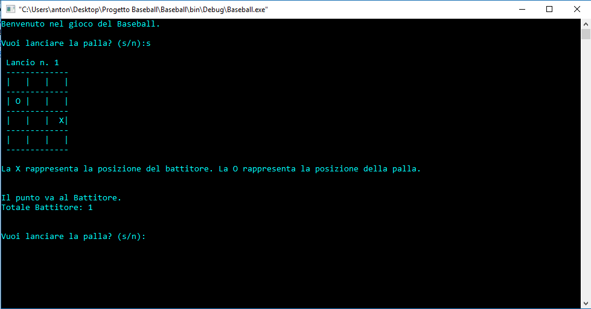
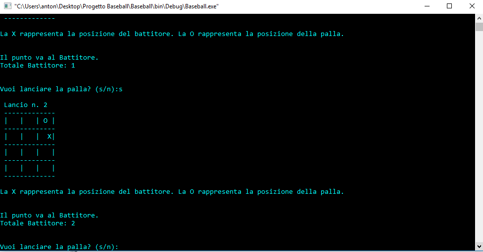
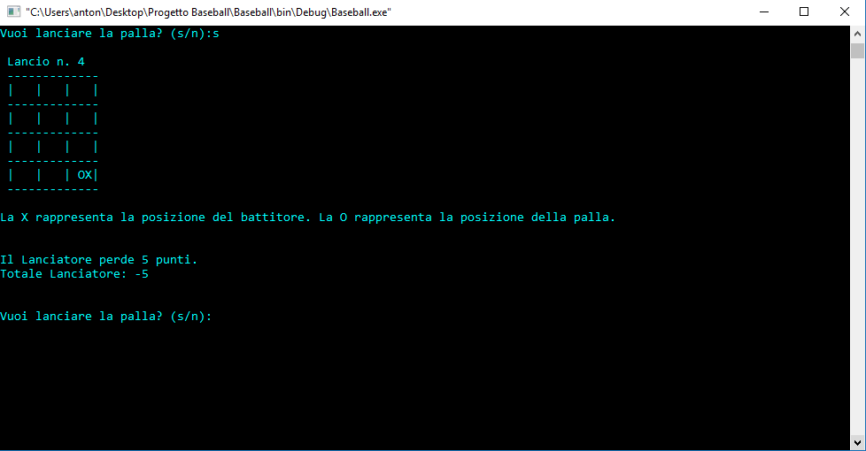
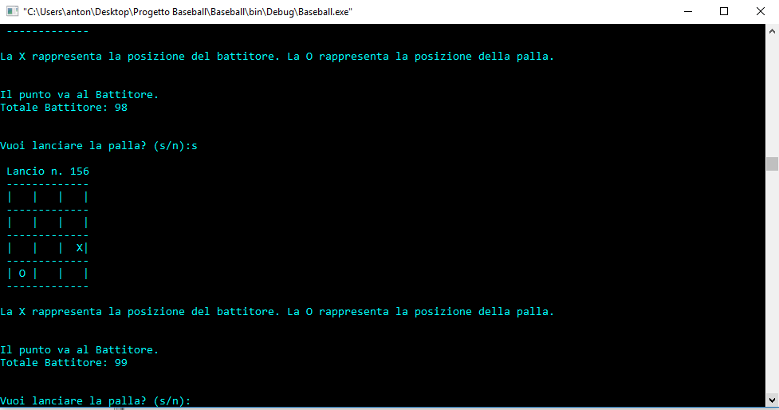
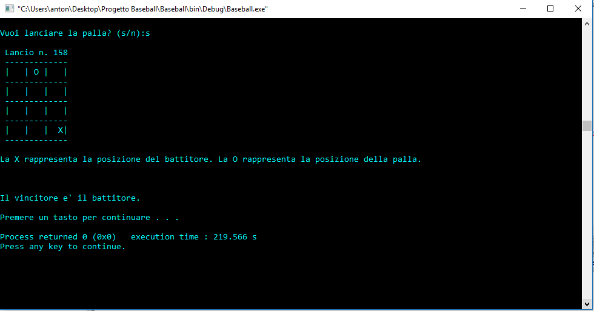

Ecco la terza partita di Baseball.
Il primo giocatore che arriverà a 100 punti vincerà la partita.
Pigiare 's' se si vuole lanciare la palla, altrimenti pigiare 'n'.
In questo primo screen il punto va al battitore.
In questo screen il punto va al battitore.
Qui il lanciatore perde 5 punti siccome ha lanciato la palla sul battitore.
Il punto va al battitore che è a quota 99 punti.
Lancio numero 158 : Partita finita !! Il battitore è il vincitore del match con il punteggio di 100 punti.